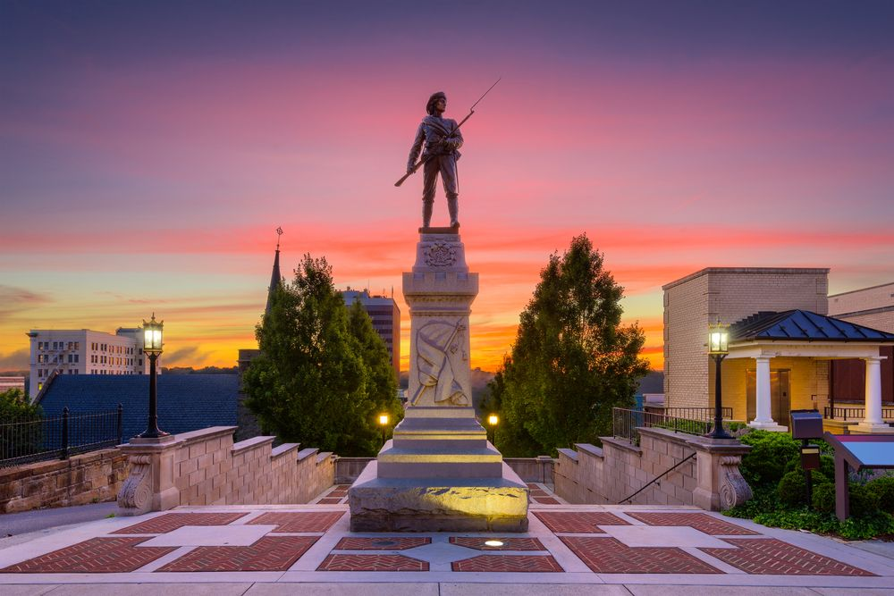

Attraction Places in Lynchburg
Welcome to Lynchburg, Virginia! Lynchburg is known for its history, outdoor trails, museums, and beautiful views of the James River.
Popular Places to Visit
Visitors can explore historic locations, family attractions, museums, and outdoor recreation throughout the city.

Top Attractions
- Blackwater Creek Trail
- Amazement Square
- Lynchburg Museum
- Old City Cemetery
- Point of Honor
Why You Need to Visit Lynchburg
Trails and the outdoors
Blackwater Creek Trail is popular for walking, running, and biking.
Museums and family fun
Amazement Square provides hands-on experiences for families, while the Lynchburg Museum introduces visitors to the history of the city. You will enjoy your visit in Lynchburg, VA.